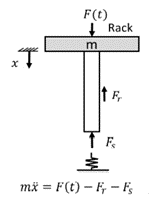
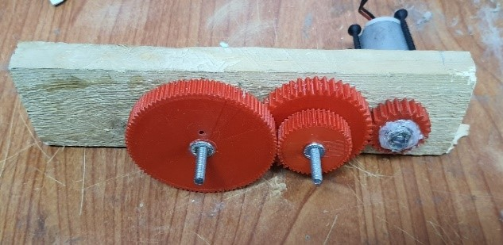
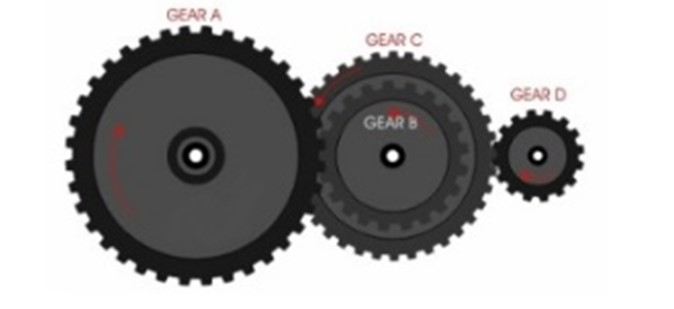
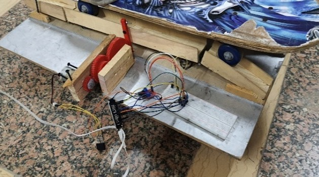
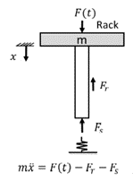
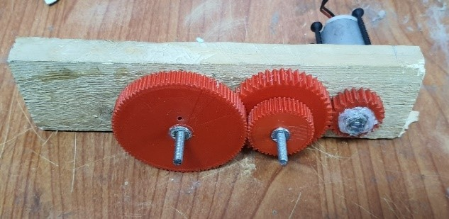
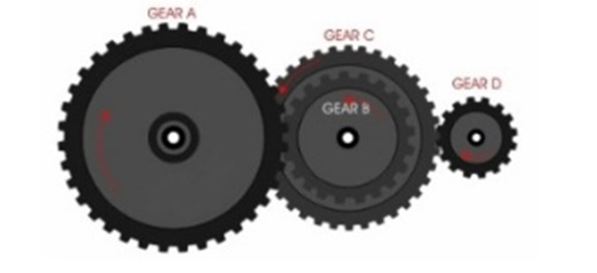
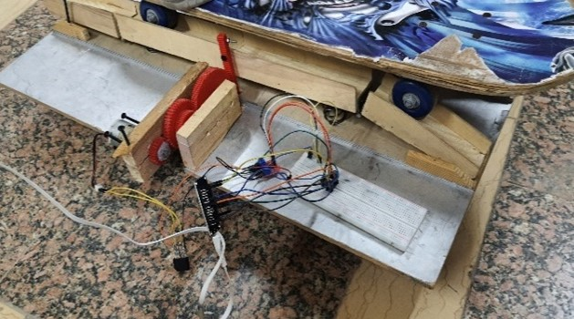

Non-renewable energy comes from sources that will run out or will not be
replenished in our lifetimes—or even in many, many lifetimes.
However, energy storage in elastic deformations in the mechanical domain offers
an alternative. This available amount of stored energy may be delivered not only to
mechanical loads, but also to systems that convert it to drive an electrical load.
This solution harvests the force trains and subways exert on the railways, redesign
a new rail system, utilizing springs to move back and forth delivering motion to a
gear system.
Accordingly, the prototype consists of:
(As shown in the 3d Simulation figure (1))
- A Combination of springs to move up and down.
- Attached rack between the surface and the pinion.
- A gear train to gear up the speed.
- A DC generator attached to the smallest gear.
- A stepper motor (Working as generator) for comparison purpose.
The following are the scientific base and rules that govern the motion of this
dynamic system:
First: The springs
As spring scales obey Hooke's law,
𝐹𝑠 = -kX (1)
Where,
𝐹𝑠 = restoring spring force
K = Hooke’s constant
X = Displacement
, the stiffer the object, the smaller the displacement it can tolerate before the elastic
limit is reached.
Accordingly, The Force of the load should overcome the
restoring force as shown in figure(2):
(Note: neglecting the friction force 𝐹𝑟
)
m 𝑥̈= F(t) − 𝐹𝑠
(2)
m 𝑥̈= 𝐹𝑛𝑒𝑡 (Net force)
F(t) = The force the load exerts
Second: The gear system
The gears behave as non-concurrent force systems. Applying force to one gear
transmits it in the gear train and get a torque in the other end.
The model gear train goes as shown in figure (3):
- The driver gear with its 90 teeth.
- 2 gears are fully attached together as a
compound gear, they turn at same speed
and same torque magnitude.
(Both gears have 45 teeth)
- The driven gear attached to the generator axis with 23 teeth.
The gears were designed as compatible gear teeth in order to mate perfectly.
The main equation governing the driver gear (gear A) and so as the remaining 3
gears is as follows: (As shown in figure (4))
𝐽𝐴ω̇ 𝑎= 𝐽𝐴𝑥̈/ 𝑅𝑎 (3)
Where,
𝐽𝐴 = moment of inertia (of gear A)
𝑥̈ = Linear Acceleration 𝑥̇ = Linear velocity
ω̇ 𝑎= Angular acceleration ω𝑎= Angular velocity
𝑅𝑎 = Radius of the gear
Since the instantiations linear velocity at the point of contact or “mating” is the
same; the ratio could be obtained:
ω1
ω2
= -
𝑅2
𝑅1
= -
𝑁2
𝑁1
(4)
Where, N = number of teeth
Therefore, increasing the number of teeth decreases the angular velocity.
In this model, the ratio between gear’s D angular velocity and gear A is obtained
by:
ω𝑑
ω𝑎
= -
𝑁𝑎
𝑁𝑏
x -
𝑁𝑐
𝑁𝑑
(5)
That indicates:
ω𝑑𝑟𝑖𝑣𝑒𝑛
ω𝑑𝑟𝑖𝑣𝑒𝑟
= -
90
45
x -
45
23
= 3.91 ≈ 4
(Gearing up by the factor of 4 in the same direction of the driver gear)
While doing the test of the prototype, the Driver gear made half revolution per
second, so the driven gear on the generator is moving with (2 RPS)
(0.5 x 4 = 2 revolutions per second)
Third: The generator
The angular velocity determines the voltage output of the generator as follows:
𝐸𝑀𝐹𝑜𝑢𝑡 = 𝐸𝑀𝐹𝑚𝑎𝑥 sin ( ωt) (6)
Where,
𝐸𝑀𝐹𝑜𝑢𝑡 = Theoretical output of voltage
𝐸𝑀𝐹𝑚𝑎𝑥 = maximum emf by the generator
t = time
𝐸𝑀𝐹𝑔 = 𝐾𝑡 ω𝑔 (7)
Where,
𝐸𝑀𝐹𝑔 = the back emf of the generator
𝐾𝑡 = the back emf (torque) constant
Therefore,
The actual output is the difference between them.
Putting it all together (As shown in figure (5)),
The gear system provided its productivity over the
stepper system with only one rotating pinion; as the
stepper generated 0.1 mA and 0.7 V.
As ΔX correlates to the gear circumference, a half
rotation was established back and forth as the
springs go up and down.
Based on the results of the test on both the gear train unit and the stepper unit, the
specified design requirements were met:
1- Ensuring maintenance and consistency
- the prototype was tested by a skateboard to resemble the train.
- Low angle of elevation was established (15 degrees).
- The highest point of hypotenuse was achieved by increasing the distance of
the adjacent side (the rail line).
2- Power output
In a system that is not supposed to serve as a power generation system, it served
as a huge power supply alternative as follows:
- Power generated = Voltage* Current
- The maximum output voltage = 3.2 volt
- The maximum current = 11.8 milliAmp
- Therefore, the maximum power = 37.76 milliwatt per unit
- Now the math is applied, and each unit production of the spring system is
amplified by the number of wheels and the repetitive amounts they press on
the rails.
- Considering the number of units and the number of pressing wheels
(2 units in each double rail * 10 carriages * 4 wheels in each carriage)
Then only this scale can generate up to 3 watts (3.021 watts).
(The average value is about 1.8072 watts)
3- Applicability on large scale
- On a large scale the project could generate up to 3 megawatts per train.
- The number of passing trains on a certain point a day assumingly (24
assuming train every hour) then a station can generate 72 megawatts a day.
- From a system with power consumption to a system of power generation!
 






